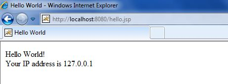
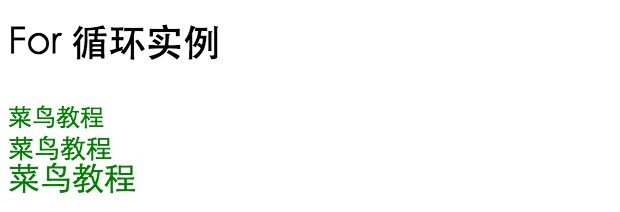
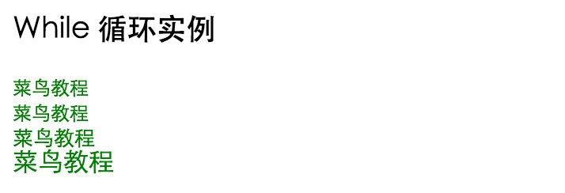

JSP 構文
このセクションでは、JSP開発における基本構文を簡単に紹介します。
スクリプトプログラム
スクリプトプログラムには、スクリプト言語で有効である限り、任意の量のJavaステートメント、変数、メソッド、または式を含めることができます。
スクリプトプログラムの構文形式：
<% コードスニペット %>
または、次に示すように、これと同等のXMLステートメントを記述することもできます。
<jsp:scriptlet> 代码片段 </jsp:scriptlet>
テキスト、HTMLタグ、JSP要素はすべてスクリプトプログラムの外側に記述する必要があります。
以下に例を示します。これは本チュートリアルの最初のJSP例でもあります。
<html>
<head><title>Hello World</title></head>
<body>
Hello World!<br/>
<%
out.println("Your IP address is " + request.getRemoteAddr());
%>
</body>
</html>
注意：Apache TomcatがC:\apache-tomcat-7.0.2ディレクトリにインストールされ、実行環境が正しく設定されていることを確認してください。
上記のコードをhello.jspとして保存し、C:\apache-tomcat-7.0.2\webapps\ROOTディレクトリに配置します。ブラウザを開き、アドレスバーにhttp://localhost:8080/hello.jspと入力します。実行後、以下の結果が得られます：

中国語のエンコーディング問題
ページに中国語を正しく表示するには、JSPファイルの先頭に以下のコードを追加する必要があります：
<%@ page language="java" contentType="text/html; charset=UTF-8"
pageEncoding="UTF-8"%>
次に、上記のプログラムを次のように変更します：
<%@ page language="java" contentType="text/html; charset=UTF-8"
pageEncoding="UTF-8"%>
<!DOCTYPE html>
<html>
<head>
<meta charset="utf-8">
<title>菜鸟教程(runoob.com)</title>
</head>
<body>
Hello World!<br/>
<%
out.println("你的 IP 地址 " + request.getRemoteAddr());
%>
</body>
</html>
これで中国語が正常に表示されます。
JSP宣言
宣言ステートメントは、後続のJavaコードで使用するために、1つ以上の変数やメソッドを宣言できます。JSPファイルでは、これらの変数とメソッドを宣言してから使用する必要があります。
JSP宣言の構文形式：
<%! declaration; [ declaration; ]+ ... %>
または、次に示すように、これと同等のXMLステートメントを記述することもできます。
<jsp:declaration> 代码片段 </jsp:declaration>
プログラム例：
<%! int i = 0; %> <%! int a, b, c; %> <%! Circle a = new Circle(2.0); %>
JSP式
JSP式に含まれるスクリプト言語の式は、最初にStringに変換され、式が出現する場所に挿入されます。
式の値はStringに変換されるため、HTMLタグであるかどうかを気にせずに、テキスト行内で式を使用できます。
式要素には、Java言語仕様に準拠した任意の式を含めることができますが、セミコロンで式を終了することはできません。
JSP式の構文形式：
<%= 式 %>
同様に、これと同等のXMLステートメントを記述することもできます：
<jsp:expression> 表达式 </jsp:expression>
プログラム例：
<%@ page language="java" contentType="text/html; charset=UTF-8"
pageEncoding="UTF-8"%>
<!DOCTYPE html>
<html>
<head>
<meta charset="utf-8">
<title>菜鸟教程(runoob.com)</title>
</head>
<body>
<p>
今天的日期是: <%= (new java.util.Date()).toLocaleString()%>
</p>
</body>
</html>
実行後、以下の結果が得られます：
今天的日期是: 2016-6-25 13:40:07
JSPコメント
JSPコメントには主に2つの役割があります：コードにコメントを付けることと、コードの一部をコメントアウトすることです。
JSPコメントの構文形式：
<%@ page language="java" contentType="text/html; charset=UTF-8"
pageEncoding="UTF-8"%>
<!DOCTYPE html>
<html>
<head>
<meta charset="utf-8">
<title>菜鸟教程(runoob.com)</title>
</head>
<body>
<%-- 该部分注释在网页中不会被显示--%>
<p>
今天的日期是: <%= (new java.util.Date()).toLocaleString()%>
</p>
</body>
</html>
実行後、以下の結果が得られます：
今天的日期是: 2016-6-25 13:41:26
さまざまな状況でのコメントの構文規則：
| 構文 | 説明 |
|---|---|
| <%-- コメント --%> | JSPコメント。コメント内容はブラウザに送信されず、コンパイルもされません。 |
| <!-- コメント --> | HTMLコメント。ブラウザでWebページのソースコードを表示するとコメント内容を確認できます。 |
| <\% | 静的 <% 定数を表します |
| %\> | 静的 %> 定数を表します |
| \' | 属性で使用される一重引用符 |
| \" | 属性で使用される二重引用符 |
JSPディレクティブ
JSPディレクティブは、JSPページ全体に関連する属性を設定するために使用されます。
JSPディレクティブの構文形式：
<%@ directive attribute="value" %>
ここには3種類のディレクティブタグがあります：
| ディレクティブ | 説明 |
|---|---|
| <%@ page ... %> | ページの依存属性を定義します。例：スクリプト言語、エラーページ、キャッシュ要件など。 |
| <%@ include ... %> | 他のファイルを含める |
| <%@ taglib ... %> | タグライブラリの定義をインポートします。カスタムタグも可能です。 |
JSPアクション
JSPアクションタグは、XML構文構造を使用してサーブレットエンジンを制御します。ファイルを動的に挿入したり、JavaBeanコンポーネントを再利用したり、ユーザーを別のページに誘導したり、Javaプラグイン用の関連HTMLを生成したりできます。
アクションタグには1つの構文形式のみがあり、XML標準に厳密に従います：
<jsp:action_name attribute="value" />
アクションタグは基本的に事前定義された関数です。以下の表に、利用可能なJSPアクションタグをいくつか示します：
| 構文 | 説明 |
|---|---|
| jsp:include | 現在のページに静的または動的リソースを含めるために使用されます |
| jsp:useBean | JavaBeanコンポーネントを検索して初期化します |
| jsp:setProperty | JavaBeanコンポーネントの値を設定します |
| jsp:getProperty | JavaBeanコンポーネントの値をoutputに挿入します |
| jsp:forward | ユーザーリクエストを含むrequestオブジェクトをあるJSPファイルから別のファイルに渡します |
| jsp:plugin | 生成されたHTMLページにAppletおよびJavaBeanオブジェクトを含めるために使用されます |
| jsp:element | XML要素を動的に作成します |
| jsp:attribute | 動的に作成されたXML要素の属性を定義します |
| jsp:body | 動的に作成されたXML要素の本体を定義します |
| jsp:text | テンプレートデータをカプセル化するために使用されます |
JSP暗黙オブジェクト
JSPは9つの自動定義変数をサポートしています。これらは通称「暗黙オブジェクト」と呼ばれ、JSPページで自動的に利用可能なオブジェクトであり、追加の宣言や初期化は不要です。
これら9つの暗黙オブジェクトの概要は以下の表のとおりです：
| オブジェクト | 説明 |
|---|---|
| request | HttpServletRequestクラスのインスタンスで、HTTPリクエストを表すオブジェクトです。フォームデータやURLパラメータなど、クライアントからサーバーに送信された情報が含まれます。 |
| response | HttpServletResponseクラスのインスタンスで、HTTPレスポンスを表すオブジェクトです。クライアントにデータとレスポンスを送信するために使用されます。 |
| out | JspWriterクラスのインスタンスで、クライアントにテキストコンテンツを出力するためのオブジェクトです。通常、HTMLの生成に使用されます。 |
| session | HttpSessionクラスのインスタンスで、ユーザーセッションを表すオブジェクトです。複数のページにわたってユーザー固有のデータを保存および取得するために使用できます。 |
| application | ServletContextクラスのインスタンスで、Webアプリケーションのコンテキストを表します。グローバルなアプリケーションデータの保存と取得に使用できます。 |
| config | ServletConfigクラスのインスタンスで、初期化パラメータなど、現在のJSPページに関する設定情報が含まれます。 |
| pageContext | PageContextクラスのインスタンスで、JSPページのすべてのオブジェクトおよび名前空間へのアクセスを提供します。 |
| page | Javaクラスのthisキーワードに似ており、現在のJSPページのインスタンスを表します。ページのメソッドを呼び出すために使用できます。 |
| exception | exceptionクラスのオブジェクトで、エラーが発生したJSPページに対応する例外オブジェクトを表します。JSPページ内の例外処理に使用され、ページで発生した例外をキャッチして処理するために使用できます。 |
制御フロー文
JSPはJava言語を全面的にサポートしています。JSPプログラムでJava APIを使用したり、条件分岐文やループ文などを含むJavaコードブロックを作成したりできます。
条件分岐文
if…elseブロック。次の例を見てください：
<%@ page language="java" contentType="text/html; charset=UTF-8"
pageEncoding="UTF-8"%>
<%! int day = 3; %>
<!DOCTYPE html>
<html>
<head>
<meta charset="utf-8">
<title>菜鸟教程(runoob.com)</title>
</head>
<body>
<h3>IF...ELSE 实例</h3>
<% if (day == 1 || day == 7) { %>
<p>今天是周末</p>
<% } else { %>
<p>今天不是周末</p>
<% } %>
</body>
</html>
実行後、以下の結果が得られます：
IF...ELSE 实例 今天不是周末
次にswitch...caseブロックを見てみましょう。if...elseブロックとは大きく異なり、out.println()を使用し、全体がスクリプトプログラムのタグ内に収められています。次のようになります：
<%@ page language="java" contentType="text/html; charset=UTF-8"
pageEncoding="UTF-8"%>
<%! int day = 3; %>
<!DOCTYPE html>
<html>
<head>
<meta charset="utf-8">
<title>菜鸟教程(runoob.com)</title>
</head>
<body>
<h3>SWITCH...CASE 实例</h3>
<%
switch(day) {
case 0:
out.println("星期天");
break;
case 1:
out.println("星期一");
break;
case 2:
out.println("星期二");
break;
case 3:
out.println("星期三");
break;
case 4:
out.println("星期四");
break;
case 5:
out.println("星期五");
break;
default:
out.println("星期六");
}
%>
</body>
</html>
ブラウザでアクセスして実行すると、以下の結果が得られます：
SWITCH...CASE 实例 星期三
ループ文
JSPプログラムでは、Javaの3つの基本ループタイプ（for、while、do...while）を使用できます。
forループの例を見てみましょう。以下は異なるフォントサイズの「菜鸟教程」を出力します：
<%@ page language="java" contentType="text/html; charset=UTF-8"
pageEncoding="UTF-8"%>
<%! int fontSize; %>
<!DOCTYPE html>
<html>
<head>
<meta charset="utf-8">
<title>菜鸟教程(runoob.com)</title>
</head>
<body>
<h3>For 循环实例</h3>
<%for ( fontSize = 1; fontSize <= 3; fontSize++){ %>
<font color="green" size="<%= fontSize %>">
菜鸟教程
</font><br />
<%}%>
</body>
</html>
実行後、以下の結果が得られます：

上記の例をwhileループで書き直します：
<%@ page language="java" contentType="text/html; charset=UTF-8"
pageEncoding="UTF-8"%>
<%! int fontSize=0; %>
<!DOCTYPE html>
<html>
<head>
<meta charset="utf-8">
<title>菜鸟教程(runoob.com)</title>
</head>
<body>
<h3>While 循环实例</h3>
<%while ( fontSize <= 3){ %>
<font color="green" size="<%= fontSize %>">
菜鸟教程
</font><br />
<%fontSize++;%>
<%}%>
</body>
</html>
ブラウザでアクセスすると、出力結果は次のようになります（fontSizeが0に初期化されているため、1行多く出力されます）：
JSP演算子JSPはすべてのJava論理演算子および算術演算子をサポートしています。
以下の表に、JSPの一般的な演算子を優先度の高い順に示します：
| カテゴリ | 演算子 | 結合性 |
|---|---|---|
| 接尾辞 | () [] . (ドット演算子) | 左から右へ |
| 単項 | ++ - - ! ~ | 右から左へ |
| 乗算 | * / % | 左から右へ |
| 加算 | + - | 左から右へ |
| シフト | >> >>> << | 左から右へ |
| 関係 | > >= < <= | 左から右へ |
| 等価/非等価 | == != | 左から右へ |
| ビット論理積 | & | 左から右へ |
| ビット排他的論理和 | ^ | 左から右へ |
| ビット論理和 | | | 左から右へ |
| 論理積 | && | 左から右へ |
| 論理和 | || | 左から右へ |
| 条件演算 | ?: | 右から左へ |
| 代入 | = += -= *= /= %= >>= <<= &= ^= |= | 右から左へ |
| カンマ | , | 左から右へ |
JSPリテラル
JSP言語では以下のリテラルが定義されています：
- ブール値(boolean)：true と false；
- 整数型(int)：Javaと同じ；
- 浮動小数点型(float)：Javaと同じ；
- 文字列(string)：一重引用符または二重引用符で始まり、終わります；
- Null：null。
クリックしてノートを共有
ノートはこの記事の内容を拡張したものである必要があります！
記事の投稿は、ここをクリックしてください
登録招待コードの取得方法
ノートを共有する前に必ずログインしてください！
登録招待コードの取得方法